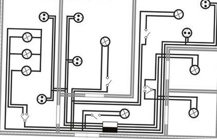

Качественный электромонтаж в Санкт-Петербурге и ленобласти, стаж 12 лет. Частный электрик, недорого и качественно.
Тел. 8 904 642 08 57 Николай.

Качественные электротехнические работы от настоящего профессионала, фото и цены.
Электротехнические работы – определенный комплекс мероприятий, направленных на обеспечение бесперебойной работы электрической системы, с разработкой конкретных схем, чертежей и расчётов. Те, кому необходимо провести работы, связанные с электромонтажом помещений, электротехнических установок и прочих систем в городе Москве, могут обращаться за помощью ко мне. Я являюсь частным квалифицированным электриком, предоставляющим высококачественные услуги по всем видам электротехнических работ.
В мои обязанности входит полный цикл мероприятий, включающий все необходимые процессы, предназначенные для налаживания работы электросистемы. Независимо от того, что стало причиной проведения электротехнических работ, я грамотно, безопасно и внимательно устраняю любые неполадки. Среди выполняемых работ можно также выделить: замену светильников, налаживание электроснабжения, замену проводки, монтаж и демонтаж розеток и т.д. Стоимость услуг довольно невысокая, но полностью оправдывает конечный результат. Поэтому выгода сотрудничества со мной – колоссальная, ведь вы получите максимальный эффект от работы в кратчайшие сроки и при этом за доступную цену.
Сколько стоит сделать электротехнические работы в квартире?
|
Вариант квартиры. |
Цена за электротехнические работы под ключ в руб. |
1 – комнатная квартира. |
От 30 000 |
2 – комнатная квартира. |
40 000 |
3 – комнатная квартира. |
48000 |
4 – комнатная квартира. |
От 55 000 |
5 – комнатная квартира. |
От 62 000 |
электротехнические работы в комнате. |
От 10 000 |
электротехнические работы в кухне под ключ. |
9000 руб. |

Понятие электротехнических работ является довольно обширным. Здесь можно рассматривать монтаж электротехнического оборудования и установок, энергетический мониторинг, различные виды электромонтажа. Учитывая всю сложность данных процессов, необходимо помнить, что доверять работу стоит только настоящему профессионалу, способному качественно и безопасно выполнить все необходимые мероприятия. Типы квартирных работ.
Электротехнические работы в квартире можно разделить на два вида:
- Ремонтные процессы или замена имеющихся розеток, выключателей и прочих компонентов, нетребующих изменений в общей схеме.
- Комплексная замена электросети с необходимыми поправками в схеме.
В первом случае отсутствует необходимость составлять конкретный проект, поэтому работа будет проводиться гораздо проще и быстрее. Я тщательно подготавливаю все необходимые моменты, отключаю напряжение в электрощите, что гарантирует безопасность окружающих и осуществления работы.
Что касается второго случая, то здесь дело обстоит сложнее, так как для того, чтобы начать электротехнические работы, необходимо тщательно продумать и составить проект, по которому будет осуществляться весь процесс. Потом готовый проект согласовывается с заказчиком и Энергонадзором, уточняются все тонкости и нюансы и далее можно начинать проведение работы по электромонтажу. Важно также сопоставить проект с архитектурным планом, ведь изначально разработанная электрика, может не предусматривать увеличенную входную нагрузку автоматов, находящихся у входа в квартиру. При таких составляющих может происходить перегрузка сети во время использования большого количества устройств и приборов.
В новых домах есть специальные резервы, что позволяют повысить входную мощность автоматов. В таком случае нужно обратиться в организацию, что эксплуатирует дом и узнать, можно ли воспользоваться этим резервом для получения высокого уровня мощности.
Электротехнические работы – довольно сложный и трудоемкий процесс, который является неотъемлемой частью строительства. Я провожу все необходимые мероприятия в четкой строгости и соответствии с установленными нормами и стандартами, поэтому гарантия безопасности и эффективности электромонтажных работ не поддается сомнению.
Индивидуальный подход к каждому помещению.
Для того чтобы как можно лучше и эффективней осуществить данный вид работ, необходимо учитывать все особенности помещений, в которых производится процесс. Кухня, спальня, ванная комната, гостиная – все нуждается в конкретном уровне мощности, который определяется использованием бытовых и прочих электроприборов. Перед тем, как приступить к проведению электротехнических работ на кухне, я уточняю количество используемого оборудования и бытовой техники, чтобы рассчитать приблизительную нагрузку на электросеть. Расположение мебели и прочих элементов также важно, ведь при монтаже розеток, выключателей необходимо внимательно следовать просьбам и требованиям клиентов.
В ванной комнате электротехнические работы я выполняю предельно осторожно, так как в этом помещении нужно позаботиться об особом уровне безопасности. Наличие тока и воды в одном месте может быть чревато негативными последствиями, поэтому только профессиональный электрик, знающий все тонкости и нюансы, должен допускаться к таким опасным работам. Важным моментом является также заземление. Нужно обязательно проследить за его правильным соединением с металлическими предметами, чтобы безопасно провести электромонтаж или другие работы, связанные с электричеством. В помещениях, где влажность повышена необходимо очень внимательно и аккуратно прокладывать или менять проводку. Я использую специальные влагоустойчивые светильники, розетки, которые способны противостоять влаге и не пропускать ток через свою поверхность.
Правильно налаженная электрическая система в доме влияет на многие аспекты жизни. Комфортное и удобное проживание, качественная работа всех устройств и техники напрямую зависит от качества выполнения электротехнических работ. К сожалению, поломки иногда случаются и при их возникновении нужно немедленно исправлять ситуацию, чтобы это не повлекло других негативных последствий. Поэтому я рекомендую сразу обращаться к моим услугам, что помогут быстро, качественно, и, конечно, эффективно избавиться от всех проблем в электрической системе. Электромонтажные работы можно проводить не только дома, но и в офисе, и на других объектах, требующих налаженного функционирования электрики.
Качественные услуги.
Осуществляя целый комплекс мероприятий по устранению неполадок или настройке работы в электрической системе, я предлагаю следующие виды услуг:
- Проектирование электроснабжения. В этот процесс входит разработка внутреннего и внешнего электроснабжения, освещения, электрощитов и, соответственно, согласование с заказчиком.
- Работы по электромонтажу. Этот цикл предусматривает осуществление внешних и внутренних электромонтажных работ, кабельную укладку, настройку освещения, обеспечение дополнительной мощности.
- Компенсация реактивной нагрузки, что включает ее разработку, установку, техническое обслуживание, а также увеличение качества электроэнергии и снижение ее потребления.
Сотрудничество со мной обеспечит вам идеально выполненный проект с бесперебойно работающим оборудованием. Любая работа, которая проводится мной, предусматривает гарантийное обслуживание с подробной консультацией и объяснением причин поломки и неисправности. Тщательно продуманная ценовая политика не позволит вам усомниться в ее уместности и адекватности, ведь качество электротехнических работ находится на высочайшем уровне. Поэтому если вам необходимо обратиться к услугам настоящего специалиста, звоните в любое время и получите высококлассное обслуживание, способное удовлетворить все ваши требования и пожелания.
 Поменять проводку в квартире.
Поменять проводку в квартире. Сколько будут стоить материалы.
Карта сайта.
Замена электропроводки в панельном доме.
Расценки на электропроводку квартир.
Замена проводки в хрущевке.
Электромонтаж в частном доме.
Электрика в загородном доме.
Сколько стоит замена электропроводки в двухкомнатной квартире?.
Сколько стоит проложить проводку в 3 ком квартире?
Сколько стоит проложить проводку в четырех комнатной квартире?
Сколько стоит сделать внутреннюю проводку?.
Стоимость штробление стен.
Установка люстр и светильников.
Замена электропроводки в панельном доме.
Электромонтаж проводов в бане.
Электрика в загородном доме